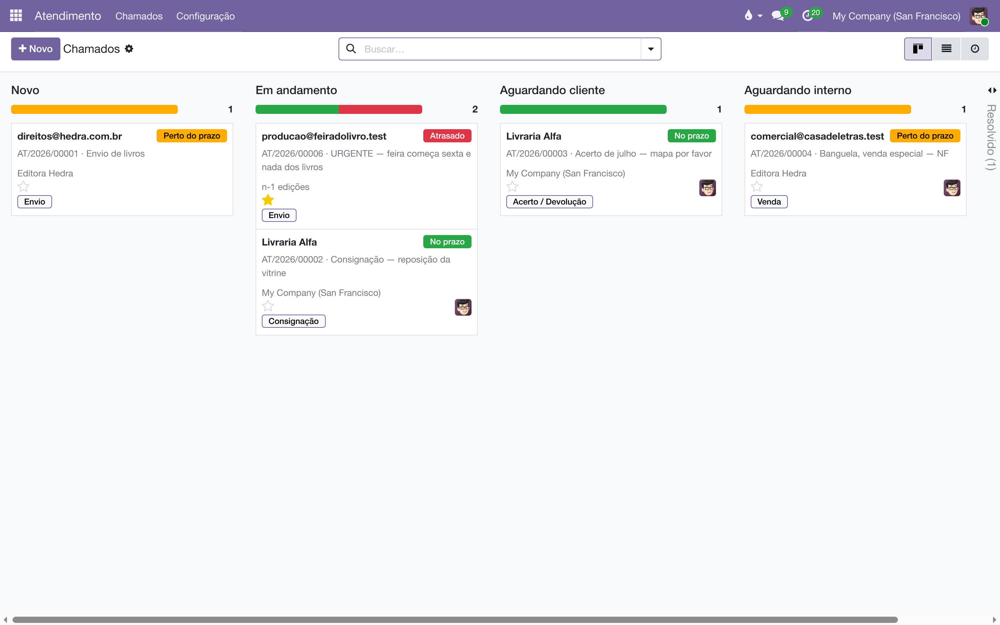
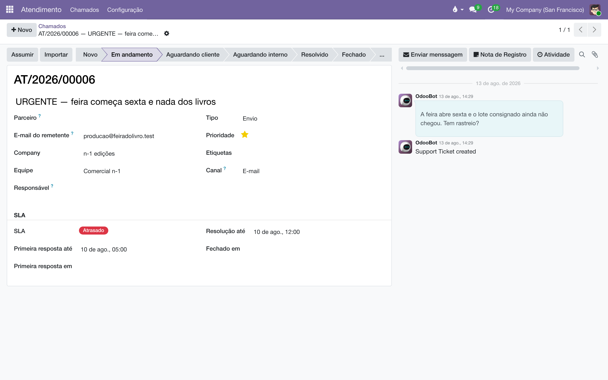

O e-mail que a livraria manda para a caixa comercial vira um chamado numerado, num quadro que a equipe inteira enxerga. A resposta sai dali mesmo — e chega ao cliente como um e-mail de gente, não como notificação de sistema. Dois relógios em horas úteis dizem o que está no prazo e o que precisa de socorro.
De dois lugares. O principal é o e-mail: cada caixa comercial da casa é o endereço de uma equipe, e toda mensagem que chega nela cria um chamado AT/2026/00001 na empresa daquela equipe — com o assunto, o texto e o remetente guardados. O segundo é o telefone: quem atendeu uma ligação sobre um pedido abre o chamado pelo botão Atendimento no cabeçalho do próprio pedido, e ele já nasce ligado ao cliente e ao documento.
Na chegada por e-mail, o sistema faz três amarrações sozinho — e só as seguras:
| O que preenche | Como decide |
|---|---|
| Parceiro | Só quando o e-mail do remetente pertence a um único contato da base. Havendo dois com o mesmo e-mail — e há milhares assim no cadastro —, o campo fica vazio: ligar à livraria errada é pior do que não ligar. |
| Tipo | Adivinhado pelas palavras do assunto e do texto: "envio de livros" vira Envio, "acerto" vira Acerto/Devolução, "boleto" vira Cobrança, e assim por diante. É um palpite para ordenar a fila — quem triar corrige num clique. |
| Empresa e Equipe | Vêm da caixa que recebeu: escrever para a caixa de uma editora põe o chamado na equipe e na empresa dela. |
Em , cada coluna é um estágio e cada cartão é uma conversa: quem escreveu, o número, o assunto, o tipo, a etiqueta de SLA e o responsável. Triar é arrastar o cartão — ou abrir o chamado e clicar no estágio na barra de cima.

| Estágio | O que significa |
|---|---|
| Novo | Chegou e ninguém assumiu. O botão Assumir, no chamado, põe seu nome e já move para Em andamento. |
| Em andamento | Alguém está cuidando. É para cá que o chamado volta sozinho quando o cliente responde. |
| Aguardando cliente | A bola está com o cliente — perguntamos algo e esperamos. O relógio de resolução pausa aqui. |
| Aguardando interno | Depende de alguém da casa (fiscal, logística). O relógio continua correndo: o cliente não tem culpa da mesa interna demorar. |
| Resolvido / Fechado | Terminou. A data de fechamento é carimbada e o veredito do SLA congela: Cumprido ou Perdido. |
| Spam | A caixa aceita remetente desconhecido de propósito — livraria nova escreve pela primeira vez —, então entra lixo. Lixo se arrasta para cá; não se apaga. |
Na busca, os filtros prontos fazem a rotina: Meus chamados, Não atribuídos, Abertos, Atrasados, Urgentes e Sem parceiro — este último é a fila de amarração pendente, dos remetentes que o sistema não reconheceu.
Pelo histórico do próprio chamado, à direita. São dois botões, e a diferença é tudo:
| Botão | Para onde vai |
|---|---|
| Enviar mensagem | Sai por e-mail para o cliente, como resposta na mesma conversa. Vai sem moldura de sistema — sem botão "ver chamado", sem rodapé do Odoo: o cliente recebe um e-mail de gente, que cai na caixa de entrada normal, não na aba de notificações. |
| Nota de Registro | Fica interna. O cliente nunca vê — é onde a equipe combina o que fazer antes de responder. |
A resposta do cliente cai no mesmo chamado, e o chamado reage: se estava em Aguardando cliente, volta para Em andamento — a bola voltou. Se estava fechado, reabre; quando o fechamento é antigo, uma nota interna sugere abrir chamado novo em vez de esticar a conversa velha.
Todo chamado nasce com dois prazos, contados no calendário de trabalho da equipe — um e-mail de sexta às 18h não está atrasado no sábado:
| Relógio | O que mede | Padrão (normal / urgente) |
|---|---|---|
| Primeira resposta | Do recebimento até a primeira mensagem da equipe ao cliente. | 8 h úteis / 2 h úteis |
| Resolução | Do recebimento até o fechamento. | 24 h úteis / 8 h úteis |
Os alvos são da equipe e mudam com a Prioridade: marcar a estrela de Urgente aperta os dois prazos na hora. Em Aguardando cliente o relógio de resolução congela com as horas que restavam, e volta a correr de onde parou quando o chamado sai de lá.

| Etiqueta | Quando |
|---|---|
| No prazo | Nenhum relógio pendente estourou. |
| Perto do prazo | Já se foi 80% do tempo até o prazo mais próximo. |
| Atrasado | Algum prazo passou com o chamado aberto. |
| Cumprido / Perdido | O veredito final, congelado no fechamento. |
Uma rotina do sistema reavalia as etiquetas a cada meia hora e, quando um chamado vira atrasado, agenda uma atividade para o responsável — ou para o líder da equipe, se ninguém assumiu. O atraso não fica esperando alguém olhar o quadro.
Em . Uma equipe por caixa de e-mail — numa casa com mais de uma editora, cada caixa comercial é uma equipe, e o chamado nasce na empresa certa. Na ficha da equipe moram:
| Campo | Para quê |
|---|---|
| Alias de e-mail | O endereço que cria chamados. Aceita remetente desconhecido de propósito: cliente novo não pode ser devolvido pela porta. |
| Empresa | A editora dona da caixa — é nela que os chamados desta equipe nascem. |
| Líder e Membros | O líder recebe o aviso de atraso dos chamados sem responsável. |
| Horas de trabalho | O calendário em que os prazos contam. |
| SLA (horas úteis) | Os quatro alvos: primeira resposta e resolução, normal e urgente. |
Ainda na configuração, Estágios e Etiquetas valem para todas as equipes — três caixas, um fluxo só.
A conversa que é sobre um pedido fica amarrada a ele. No chamado, o campo Pedido aparece quando o tipo é venda; no pedido, o botão inteligente Atendimento conta e abre os chamados daquele documento — e o botão do cabeçalho abre um chamado novo, já preenchido com o cliente e o pedido. É assim que a ligação de telefone vira registro sem digitação.
Com a consignação instalada, o chamado ganha mais: o vínculo com a CO e o acordo, o Mapa que responde com o extrato da prateleira anexado, e o assistente Importar que transforma a conversa em documento. Tudo em Atendimento e consignação.
Manual completo, com busca e as demais páginas: Atendimento.